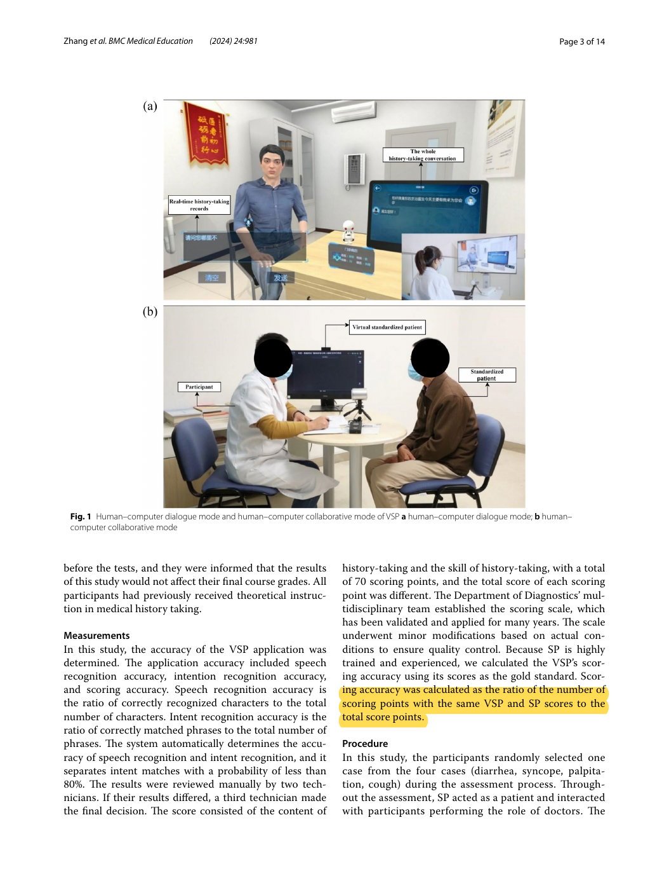
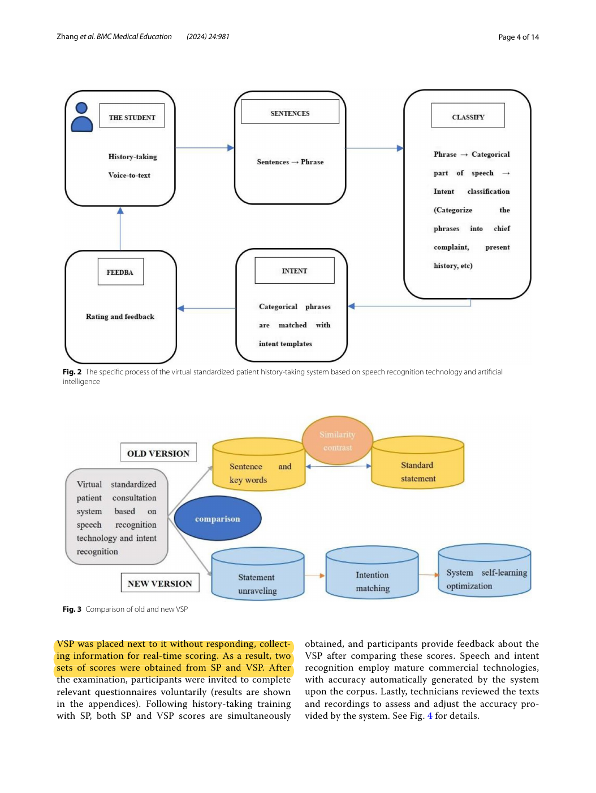
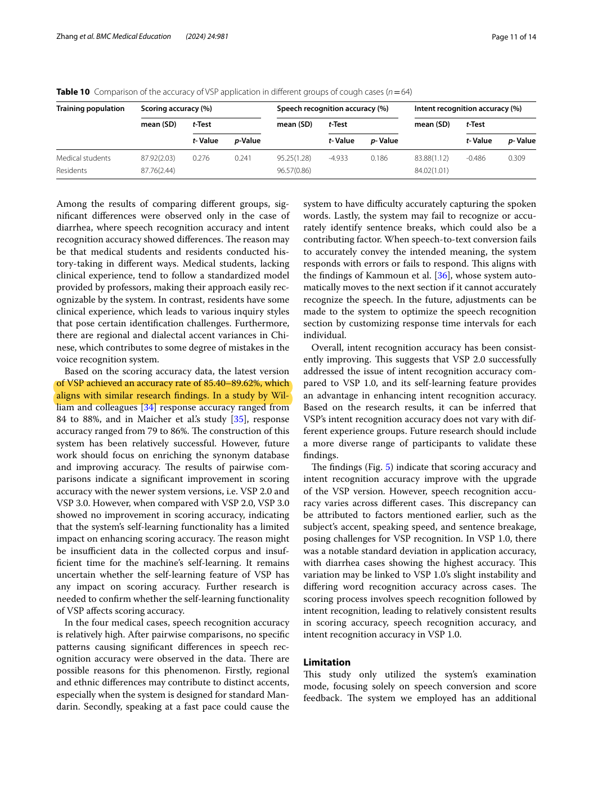

R41 · Core: item-level assessment against a human reference
Analysis of virtual standardized patients for assessing clinical fundamental skills of medical students: a prospective study
Xinyu Zhang, Duo Zeng, Xiandi Wang, Yaoyu Fu, Ying Han, Manqing He, Xiaoling Chen, and Dan Pu · 2024
BMC Medical Education, vol. 24, article 981
What this paper actually studied
Research question
How accurately can an automated virtual-standardized-patient system score history-taking, and does accuracy change across system versions?
How the study was conducted
The prospective study analyzed 476 of 502 participants across three years and four cases. Importantly, its tested mode used a human SP interacting with the student while the VSP listened silently and scored. Speech recognition was followed by intent-template matching. The established local scale contained 70 scoring points. Scoring accuracy was the number of points receiving the same VSP and SP score divided by all scoring points.
What was found
The latest version’s reported scoring accuracy ranged from 85.40% to 89.62% across cases. Newer versions improved on the original system, but VSP 3.0 did not clearly improve scoring accuracy over VSP 2.0. VSP and SP total scores differed, and automated scores were generally lower.
What the findings do not establish
This is not a modern generative-LLM role-versus-grading trial. The paper explicitly states that it did not test conversational response accuracy in its dialogue mode. The 70-point denominator is specific to its scale, and its statistical choices should not be transferred without checking the paired structure. The PDF is CC BY-NC-ND; the unaltered source is preserved, and marked copies here are private reading aids.
How it informs DualGraph-OSCE
This paper directly supports comparing decisions at the level where the rubric is executed. For DualGraph-OSCE, matching a total grade alone could hide a wrong prompt cap or an incorrectly resolved error. Its item-level definition is therefore useful, but the proposed metric should additionally require all applicable consequences to agree. A fulfilled item with the wrong cap remains a failed exact-decision comparison. The human–machine collaborative design also illustrates why one cannot infer virtual-role fidelity from a scoring-only study.
Where to cite it
Evaluation methods: define faculty-reference item agreement. Related work: distinguish assessment-only virtual-SP systems from systems that also generate role dialogue. Limitations: explain why score accuracy does not establish patient-role accuracy.
A possible manuscript sentence
A prospective virtual-SP study evaluated scoring by counting rubric points whose automated and human-SP scores agreed. We extend this decision-level comparison to completion states and the applicable prompt, correction, and safety consequences, and evaluate role behavior separately.
[R41]This is a proposed paraphrase for our manuscript, not a quotation from the source and not a reported result of DualGraph-OSCE.
Practical implications for our study
- Preserve faculty item decisions and their reason, rather than retaining only a final grade.
- Use the same transcript for both assessment methods; otherwise the comparator answers a different student performance.
- Report role outcomes independently. Scoring agreement cannot certify disclosure permissions or realistic patient behavior.
Original passages and page links
Page numbers refer to the physical pages of the unaltered publisher PDF. Yellow marks identify the cited text; the whole page is shown so its context remains visible.
R41-E1Definition of scoring accuracy
Original PDF page 3. The numerator is exactly matching scoring points; the denominator is all scoring points.

R41-E2Human SP speaks; VSP scores silently
Original PDF page 4. This passage identifies the tested collaborative mode.

R41-E3Latest scoring accuracy and remaining limitations
Original PDF page 11. The reported range is not 100% and is not role-response fidelity.
